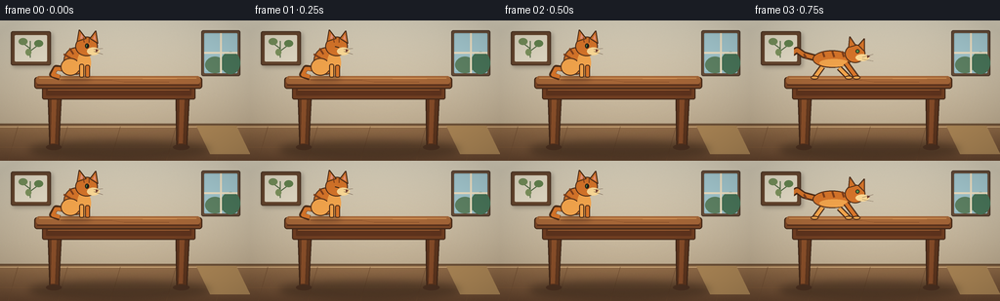
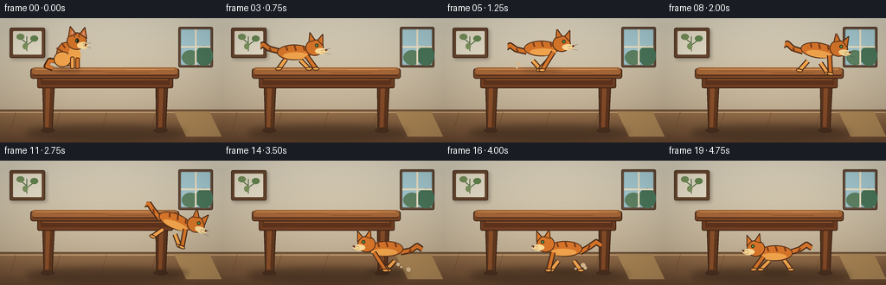

CODING AGENTS AS PIXEL WORLD MODELS
traex/GPT-5.6-Sol · dynamic_spatial_relationship_0010
点击播放 · 原生 RGB 像素
逐轮保存的候选
回放视频、检查图与代码变化。
每份候选均可单独播放。实际图片检查记录在下方工具轨迹中。
候选 01播放与检查图
点击播放 · 原生 RGB 像素


展开代码变化
--- 上一保存版本
+++ 本次保存版本
@@ -0,0 +1,256 @@
+from pathlib import Path
+import math
+import numpy as np
+from PIL import Image, ImageDraw, ImageFilter
+import artifact_io
+
+W,H,N = 256,144,20
+S=4
+rng=np.random.default_rng(12)
+
+def C(v): return int(round(v*S))
+def box(b): return tuple(C(v) for v in b)
+def pts(p): return [(C(x),C(y)) for x,y in p]
+
+def ellipse(d,b,fill,outline=None,width=1): d.ellipse(box(b),fill=fill,outline=outline,width=C(width) if outline else 1)
+def rr(d,b,r,fill,outline=None,width=1): d.rounded_rectangle(box(b),radius=C(r),fill=fill,outline=outline,width=C(width) if outline else 1)
+def poly(d,p,fill,outline=None,width=1): d.polygon(pts(p),fill=fill); outline and d.line(pts(p+[p[0]]),fill=outline,width=C(width),joint='curve')
+def line(d,p,fill,width=1,joint='curve'): d.line(pts(p),fill=fill,width=C(width),joint=joint)
+
+def base_scene(t):
+ # softly textured warm wall and floor
+ yy=np.arange(H*S)[:,None]
+ arr=np.empty((H*S,W*S,3),dtype=np.float32)
+ wall_top=np.array([221,213,192.]); wall_bot=np.array([193,175,147.])
+ floor_top=np.array([151,113,76.]); floor_bot=np.array([102,70,47.])
+ split=C(107)
+ for y in range(H*S):
+ if y<split:
+ q=y/split; col=wall_top*(1-q)+wall_bot*q
+ else:
+ q=(y-split)/(H*S-split); col=floor_top*(1-q)+floor_bot*q
+ arr[y,:,:]=col
+ noise=rng.normal(0,1.25,arr.shape[:2])
+ arr += noise[:,:,None]
+ im=Image.fromarray(np.uint8(np.clip(arr,0,255)),'RGB')
+ d=ImageDraw.Draw(im)
+ # crown line and floorboards
+ line(d,[(0,106.5),(256,106.5)],(112,84,58),2)
+ line(d,[(0,109),(256,109)],(209,173,126),1)
+ for x in [18,69,123,180,231]:
+ line(d,[(x,109),(x-10,144)],(112,77,49),.6)
+ line(d,[(0,130),(256,130)],(130,91,57),.6)
+ # framed art, subdued so cat remains focal
+ shadow=Image.new('RGBA',im.size,(0,0,0,0)); sd=ImageDraw.Draw(shadow)
+ rr(sd,(13,13,54,48),2,(45,30,18,70)); shadow=shadow.filter(ImageFilter.GaussianBlur(C(2))); im=Image.alpha_composite(im.convert('RGBA'),shadow).convert('RGB'); d=ImageDraw.Draw(im)
+ rr(d,(11,11,52,46),2,(104,71,47), (76,52,36),1)
+ rr(d,(15,15,48,42),1,(232,224,202))
+ # simple botanical print
+ line(d,[(31,38),(31,21)],(85,112,72),1)
+ line(d,[(31,29),(23,23)],(85,112,72),1)
+ line(d,[(31,31),(39,25)],(85,112,72),1)
+ ellipse(d,(19,18,28,25),(119,145,92)); ellipse(d,(35,20,44,27),(102,135,81)); ellipse(d,(26,29,32,36),(130,153,97))
+ # right window, cool light
+ rr(d,(206,10,246,57),2,(104,78,57), (78,58,45),1)
+ rr(d,(209,13,243,54),1,(154,193,203))
+ # sky panes and muted foliage
+ rr(d,(210,14,242,52),0,(167,204,211))
+ ellipse(d,(210,37,230,54),(96,133,102)); ellipse(d,(226,32,246,55),(74,119,91))
+ line(d,[(226,13),(226,54)],(244,230,200),2); line(d,[(209,33),(243,33)],(244,230,200),2)
+ # sunlit patch on floor
+ poly(d,[(201,108),(242,108),(256,137),(215,137)],(174,136,87))
+ return im
+
+def draw_table(im):
+ # drop shadow and strong readable furniture silhouette
+ sh=Image.new('RGBA',im.size,(0,0,0,0)); sd=ImageDraw.Draw(sh)
+ ellipse(sd,(30,124,215,141),(35,24,16,105)); sh=sh.filter(ImageFilter.GaussianBlur(C(4)))
+ im.alpha_composite(sh)
+ d=ImageDraw.Draw(im)
+ # rear/side legs
+ poly(d,[(180,70),(194,70),(191,131),(181,131)],(91,52,29), (59,36,23),1)
+ poly(d,[(49,70),(63,70),(60,131),(51,131)],(97,56,31), (59,36,23),1)
+ # front highlights on legs
+ poly(d,[(53,75),(58,75),(56,126),(52,126)],(139,80,42))
+ poly(d,[(184,75),(189,75),(187,126),(183,126)],(133,75,40))
+ # apron
+ rr(d,(43,65,200,81),2,(113,63,34),(63,38,24),1)
+ rr(d,(47,70,196,77),1,(94,51,29))
+ line(d,[(49,71),(194,71)],(151,91,49),1)
+ # top slab with beveled lip
+ rr(d,(35,58,207,70),3,(124,71,38),(63,39,24),1)
+ rr(d,(37,57,205,65),3,(166,103,56))
+ line(d,[(40,59),(201,59)],(207,144,82),1)
+ line(d,[(38,66),(204,66)],(78,43,26),1)
+ # wood grain
+ line(d,[(62,61),(115,61),(127,63),(173,63)],(132,76,41),.6)
+ line(d,[(146,59.5),(181,59.5)],(218,150,87),.5)
+ # feet contact shadows
+ ellipse(d,(47,127,63,133),(74,48,32)); ellipse(d,(177,127,194,133),(74,48,32))
+
+def cat_shadow(im,x,y,w=47,alpha=75):
+ sh=Image.new('RGBA',im.size,(0,0,0,0)); sd=ImageDraw.Draw(sh)
+ sd.ellipse(box((x-w/2,y-2,x+w/2,y+4)),fill=(42,28,17,alpha))
+ sh=sh.filter(ImageFilter.GaussianBlur(C(2.4))); im.alpha_composite(sh)
+
+def cat_palette():
+ return dict(out=(77,45,25,255), dark=(132,65,25,255), fur=(217,118,42,255), light=(245,166,77,255), cream=(255,220,152,255), stripe=(130,64,27,255), eye=(93,151,75,255), black=(31,26,21,255))
+
+def draw_sitting_cat(im,x,baseline,blink=False,crouch=0):
+ # crouch 0=sit, 1=compressed launch posture
+ p=cat_palette(); d=ImageDraw.Draw(im)
+ if crouch<.55:
+ cat_shadow(im,x,baseline,31,60); d=ImageDraw.Draw(im)
+ # tail curls left behind body
+ line(d,[(x-7,baseline-8),(x-21,baseline-10),(x-25,baseline-3),(x-17,baseline)],p['out'],6)
+ line(d,[(x-7,baseline-8),(x-21,baseline-9),(x-24,baseline-3),(x-17,baseline-1)],p['fur'],4)
+ # body and haunch
+ ellipse(d,(x-13,baseline-31,x+12,baseline-3),p['fur'],p['out'],1)
+ ellipse(d,(x-16,baseline-20,x+4,baseline-2),p['light'],p['out'],1)
+ # chest
+ ellipse(d,(x+1,baseline-27,x+15,baseline-3),p['light'])
+ # forepaws
+ rr(d,(x+3,baseline-14,x+8,baseline),2,p['light'],p['out'],1)
+ rr(d,(x+9,baseline-13,x+14,baseline),2,p['fur'],p['out'],1)
+ # head, ears facing right
+ ellipse(d,(x-1,baseline-42,x+22,baseline-22),p['fur'],p['out'],1)
+ poly(d,[(x+1,baseline-37),(x+3,baseline-49),(x+10,baseline-40)],p['fur'],p['out'],1)
+ poly(d,[(x+14,baseline-40),(x+20,baseline-48),(x+22,baseline-35)],p['fur'],p['out'],1)
+ poly(d,[(x+4,baseline-40),(x+5,baseline-45),(x+8,baseline-40)],(239,151,126,255))
+ poly(d,[(x+17,baseline-40),(x+19,baseline-44),(x+20,baseline-38)],(239,151,126,255))
+ # muzzle
+ ellipse(d,(x+11,baseline-31,x+24,baseline-23),p['cream'])
+ if blink:
+ line(d,[(x+9,baseline-32),(x+13,baseline-31)],p['black'],1)
+ else:
+ ellipse(d,(x+9,baseline-35,x+13,baseline-30),p['eye'],p['black'],1); ellipse(d,(x+11,baseline-34,x+12,baseline-30),p['black'])
+ poly(d,[(x+20,baseline-29),(x+23,baseline-28),(x+20,baseline-26)],(108,53,43,255))
+ line(d,[(x+18,baseline-27),(x+27,baseline-24)],(88,64,50,220),.6)
+ line(d,[(x+18,baseline-29),(x+27,baseline-30)],(88,64,50,220),.6)
+ # stripes
+ line(d,[(x-7,baseline-30),(x-3,baseline-24)],p['stripe'],2)
+ line(d,[(x-13,baseline-24),(x-6,baseline-20)],p['stripe'],2)
+ line(d,[(x+7,baseline-41),(x+8,baseline-36)],p['stripe'],1)
+ line(d,[(x+13,baseline-41),(x+13,baseline-36)],p['stripe'],1)
+ else:
+ draw_running_cat(im,x,baseline,0.1, facing=1, crouched=True)
+
+def draw_running_cat(im,x,baseline,phase,facing=1,crouched=False,air=False,angle=0):
+ # Draw on a local high-resolution transparent canvas, allowing clean rotation in jumps.
+ p=cat_palette(); lw,lh=82,58
+ layer=Image.new('RGBA',(C(lw),C(lh)),(0,0,0,0)); d=ImageDraw.Draw(layer)
+ cx=39; by=46
+ def X(v): return cx+facing*v
+ def qbox(x0,y0,x1,y1):
+ a,b=X(x0),X(x1); return box((min(a,b),y0,max(a,b),y1))
+ # tail with expressive wave
+ tail_y=by-20 + 3*math.sin(phase*math.tau)
+ tpts=[(X(-17),by-20),(X(-29),tail_y-5),(X(-36),tail_y-10),(X(-42),tail_y-6)]
+ line(d,tpts,p['out'],7); line(d,tpts,p['fur'],4)
+ # stride legs behind body
+ s=math.sin(phase*math.tau)
+ if air:
+ legs=[(-10,by-10,-18,by+2),(5,by-10,15,by+1)]
+ elif crouched:
+ legs=[(-10,by-11,-18,by),(7,by-10,17,by)]
+ else:
+ legs=[(-10,by-10,-10+13*s,by+1),(8,by-10,8-13*s,by+1)]
+ for ax,ay,bx,by2 in legs:
+ line(d,[(X(ax),ay),(X(bx),by2)],p['out'],6)
+ line(d,[(X(ax),ay),(X(bx),by2)],p['light'],3.5)
+ ellipse(d,(X(bx)-4,by2-2,X(bx)+4,by2+2),p['light'],p['out'],1)
+ # long body
+ body_y=by-25 if not crouched else by-20
+ d.ellipse(qbox(-20,body_y-8,20,body_y+10),fill=p['fur'],outline=p['out'],width=C(1))
+ d.ellipse(qbox(-13,body_y+1,17,body_y+9),fill=p['light'])
+ # shoulders and head
+ hx=X(23); hy=body_y-4
+ ellipse(d,(hx-10,hy-10,hx+11,hy+9),p['fur'],p['out'],1)
+ # ears with direction-aware coords
+ poly(d,[(X(17),hy-7),(X(18),hy-18),(X(24),hy-9)],p['fur'],p['out'],1)
+ poly(d,[(X(27),hy-9),(X(33),hy-16),(X(33),hy-3)],p['fur'],p['out'],1)
+ # cream muzzle at leading side
+ mx=X(31)
+ ellipse(d,(mx-7,hy,mx+7,hy+7),p['cream'])
+ eye_x=X(26)
+ ellipse(d,(eye_x-2,hy-5,eye_x+2,hy-1),p['eye'],p['black'],.7)
+ nx=X(36); poly(d,[(nx,hy+1),(nx+facing*3,hy+2),(nx,hy+4)],(104,51,41,255))
+ # body stripes
+ for sx in [-10,0,10]:
+ line(d,[(X(sx),body_y-7),(X(sx+2*facing),body_y-1)],p['stripe'],2)
+ line(d,[(X(-29),tail_y-6),(X(-26),tail_y-1)],p['stripe'],2)
+ # front leg defined on top
+ if air: ex,ey=X(18),by+1
+ elif crouched: ex,ey=X(25),by
+ else: ex,ey=X(11-13*s),by+1
+ line(d,[(X(14),body_y+5),(ex,ey)],p['out'],6); line(d,[(X(14),body_y+5),(ex,ey)],p['fur'],3.5)
+ ellipse(d,(ex-4,ey-2,ex+4,ey+2),p['light'],p['out'],1)
+ # whiskers
+ line(d,[(X(31),hy+3),(X(42),hy)],(89,65,51,220),.6)
+ line(d,[(X(31),hy+5),(X(42),hy+7)],(89,65,51,220),.6)
+ if angle:
+ layer=layer.rotate(-angle*facing,resample=Image.Resampling.BICUBIC,expand=False,center=(C(cx),C(by-15)))
+ # position local baseline at requested baseline
+ im.alpha_composite(layer,(C(x-cx),C(baseline-by)))
+
+def dust(im,x,y,amount,frame):
+ d=ImageDraw.Draw(im)
+ for k in range(amount):
+ r=1.2+((k+frame)%3)*.7
+ dx=-k*5 + math.sin(k*4+frame)*2
+ dy=-((k*3+frame)%7)
+ ellipse(d,(x+dx-r,y+dy-r,x+dx+r,y+dy+r),(220,190,148,130))
+
+def frame_at(i):
+ im=base_scene(i).convert('RGBA')
+ draw_table(im)
+ # subtle action-dependent cat rendering
+ if i<=2:
+ # calm establishing beat, clearly on tabletop
+ draw_sitting_cat(im,78,58.5,blink=(i==1),crouch=0)
+ elif i==3:
+ draw_sitting_cat(im,84,58.5,crouch=.9)
+ elif 4<=i<=7:
+ u=(i-4)/3
+ x=95 + 71*(u*u*(3-2*u))
+ cat_shadow(im,x,60,45,42)
+ draw_running_cat(im,x,59,phase=(i-4)*.36,facing=1,crouched=False)
+ if i>=5: dust(im,x-24,58,2,i)
+ elif 8<=i<=12:
+ u=(i-8)/4
+ # leap clears right edge, then descends with gravity
+ x=176+31*u
+ y=61 + 58*(u*u)
+ cat_shadow(im,x,128,40,30+int(35*u))
+ draw_running_cat(im,x,y,phase=.18+i*.13,facing=1,air=True,angle=8+18*u)
+ elif i==13:
+ x=201; y=126
+ cat_shadow(im,x,y,44,80)
+ draw_running_cat(im,x,y,.73,facing=-1,crouched=True)
+ dust(im,210,126,4,i)
+ elif 14<=i<=16:
+ u=(i-14)/2
+ x=190-49*(u*u*(3-2*u))
+ cat_shadow(im,x,127,46,68)
+ draw_running_cat(im,x,126,phase=.15+(i-14)*.37,facing=-1)
+ dust(im,x+24,126,3,i)
+ else:
+ # destination: directly below tabletop, between the legs
+ x=132-(i-17)*2
+ cat_shadow(im,x,128,34,70)
+ # standing/crouched final pose, facing back toward its route
+ draw_running_cat(im,x,126,phase=.05,facing=-1,crouched=True)
+ # tiny warm vignette for cinematic coherence
+ a=np.array(im.convert('RGB')).astype(np.float32)
+ Y,X=np.mgrid[0:H*S,0:W*S]; dx=(X-W*S/2)/(W*S/2); dy=(Y-H*S/2)/(H*S/2)
+ vig=np.clip(1-.10*(dx*dx+dy*dy),.83,1)[:,:,None]
+ a=np.clip(a*vig,0,255).astype(np.uint8)
+ out=Image.fromarray(a).resize((W,H),Image.Resampling.LANCZOS)
+ return np.asarray(out,dtype=np.uint8)
+
+def main():
+ frames=np.stack([frame_at(i) for i in range(N)],axis=0)
+ artifact_io.save(frames,Path(__file__).resolve().parent)
+ print('saved',frames.shape,frames.dtype,'range',frames.min(),frames.max())
+
+if __name__=='__main__': main()
候选 02播放与检查图
点击播放 · 原生 RGB 像素

展开代码变化
--- 上一保存版本
+++ 本次保存版本
@@ -32,7 +32,7 @@
arr[y,:,:]=col
noise=rng.normal(0,1.25,arr.shape[:2])
arr += noise[:,:,None]
- im=Image.fromarray(np.uint8(np.clip(arr,0,255)),'RGB')
+ im=Image.fromarray(np.uint8(np.clip(arr,0,255)))
d=ImageDraw.Draw(im)
# crown line and floorboards
line(d,[(0,106.5),(256,106.5)],(112,84,58),2)
@@ -251,6 +251,16 @@
def main():
frames=np.stack([frame_at(i) for i in range(N)],axis=0)
artifact_io.save(frames,Path(__file__).resolve().parent)
+ # A conventional preview video in addition to the required lossless RGB artifact.
+ try:
+ import cv2
+ writer=cv2.VideoWriter(str(Path(__file__).resolve().parent/'output.mp4'),
+ cv2.VideoWriter_fourcc(*'mp4v'),4.0,(W,H))
+ for frame in frames:
+ writer.write(cv2.cvtColor(frame,cv2.COLOR_RGB2BGR))
+ writer.release()
+ except Exception:
+ pass
print('saved',frames.shape,frames.dtype,'range',frames.min(),frames.max())
if __name__=='__main__': main()
可观测工具轨迹
实际执行的命令与返回图片。
命令 1exit 0
/bin/bash -lc "cat prompt.txt && printf '\\n--- GENERATION_RULES.md ---\\n' && cat GENERATION_RULES.md"
命令 2exit 0
/bin/bash -lc "cat task_spec.json && printf '\\n--- FILES ---\\n' && find . -maxdepth 2 -type f -printf '%p\\n' | sort"
命令 3exit 0
/bin/bash -lc "command -v ffmpeg; command -v python3; python3 - <<'PY' mods=['PIL','numpy','cv2','cairo'] for m in mods: try: x=__import__(m); print(m,'OK',getattr(x,'__version__','')) except Exception as e: print(m,'NO',e) PY"
命令 4exit 0
/bin/bash -lc 'cat artifact_io.py'
命令 5exit 0
/bin/bash -lc "cat > generate.py <<'PY'
from pathlib import Path
import math
import numpy as np
from PIL import Image, ImageDraw, ImageFilter
import artifact_io
W,H,N = 256,144,20
S=4
rng=np.random.default_rng(12)
def C(v): return int(round(v*S))
def box(b): return tuple(C(v) for v in b)
def pts(p): return [(C(x),C(y)) for x,y in p]
def ellipse(d,b,fill,outline=None,width=1): d.ellipse(box(b),fill=fill,outline=outline,width=C(width) if outline else 1)
def rr(d,b,r,fill,outline=None,width=1): d.rounded_rectangle(box(b),radius=C(r),fill=fill,outline=outline,width=C(width) if outline else 1)
def poly(d,p,fill,outline=None,width=1): d.polygon(pts(p),fill=fill); outline and d.line(pts(p+[p[0]]),fill=outline,width=C(width),joint='curve')
def line(d,p,fill,width=1,joint='curve'): d.line(pts(p),fill=fill,width=C(width),joint=joint)
def base_scene(t):
# softly textured warm wall and floor
yy=np.arange(H*S)[:,None]
arr=np.empty((H*S,W*S,3),dtype=np.float32)
wall_top=np.array([221,213,192.]); wall_bot=np.array([193,175,147.])
floor_top=np.array([151,113,76.]); floor_bot=np.array([102,70,47.])
split=C(107)
for y in range(H*S):
if y<split:
q=y/split; col=wall_top*(1-q)+wall_bot*q
else:
q=(y-split)/(H*S-split); col=floor_top*(1-q)+floor_bot*q
arr[y,:,:]=col
noise=rng.normal(0,1.25,arr.shape[:2])
arr += noise[:,:,None]
im=Image.fromarray(np.uint8(np.clip(arr,0,255)),'RGB')
d=ImageDraw.Draw(im)
# crown line and floorboards
line(d,[(0,106.5),(256,106.5)],(112,84,58),2)
line(d,[(0,109),(256,109)],(209,173,126),1)
for x in [18,69,123,180,231]:
line(d,[(x,109),(x-10,144)],(112,77,49),.6)
line(d,[(0,130),(256,130)],(130,91,57),.6)
# framed art, subdued so cat remains focal
shadow=Image.new('RGBA',im.size,(0,0,0,0)); sd=ImageDraw.Draw(shadow)
rr(sd,(13,13,54,48),2,(45,30,18,70)); shadow=shadow.filter(ImageFilter.GaussianBlur(C(2))); im=Image.alpha_composite(im.convert('RGBA'),shadow).convert('RGB'); d=ImageDraw.Draw(im)
rr(d,(11,11,52,46),2,(104,71,47), (76,52,36),1)
rr(d,(15,15,48,42),1,(232,224,202))
# simple botanical print
line(d,[(31,38),(31,21)],(85,112,72),1)
line(d,[(31,29),(23,23)],(85,112,72),1)
line(d,[(31,31),(39,25)],(85,112,72),1)
ellipse(d,(19,18,28,25),(119,145,92)); ellipse(d,(35,20,44,27),(102,135,81)); ellipse(d,(26,29,32,36),(130,153,97))
# right window, cool light
rr(d,(206,10,246,57),2,(104,78,57), (78,58,45),1)
rr(d,(209,13,243,54),1,(154,193,203))
# sky panes and muted foliage
rr(d,(210,14,242,52),0,(167,204,211))
ellipse(d,(210,37,230,54),(96,133,102)); ellipse(d,(226,32,246,55),(74,119,91))
line(d,[(226,13),(226,54)],(244,230,200),2); line(d,[(209,33),(243,33)],(244,230,200),2)
# sunlit patch on floor
poly(d,[(201,108),(242,108),(256,137),(215,137)],(174,136,87))
return im
def draw_table(im):
# drop shadow and strong readable furniture silhouette
sh=Image.new('RGBA',im.size,(0,0,0,0)); sd=ImageDraw.Draw(sh)
ellipse(sd,(30,124,215,141),(35,24,16,105)); sh=sh.filter(ImageFilter.GaussianBlur(C(4)))
im.alpha_composite(sh)
d=ImageDraw.Draw(im)
# rear/side legs
poly(d,[(180,70),(194,70),(191,131),(181,131)],(91,52,29), (59,36,23),1)
poly(d,[(49,70),(63,70),(60,131),(51,131)],(97,56,31), (59,36,23),1)
# front highlights on legs
poly(d,[(53,75),(58,75),(56,126),(52,126)],(139,80,42))
poly(d,[(184,75),(189,75),(187,126),(183,126)],(133,75,40))
# apron
rr(d,(43,65,200,81),2,(113,63,34),(63,38,24),1)
rr(d,(47,70,196,77),1,(94,51,29))
line(d,[(49,71),(194,71)],(151,91,49),1)
# top slab with beveled lip
rr(d,(35,58,207,70),3,(124,71,38),(63,39,24),1)
rr(d,(37,57,205,65),3,(166,103,56))
line(d,[(40,59),(201,59)],(207,144,82),1)
line(d,[(38,66),(204,66)],(78,43,26),1)
# wood grain
line(d,[(62,61),(115,61),(127,63),(173,63)],(132,76,41),.6)
line(d,[(146,59.5),(181,59.5)],(218,150,87),.5)
# feet contact shadows
ellipse(d,(47,127,63,133),(74,48,32)); ellipse(d,(177,127,194,133),(74,48,32))
def cat_shadow(im,x,y,w=47,alpha=75):
sh=Image.new('RGBA',im.size,(0,0,0,0)); sd=ImageDraw.Draw(sh)
sd.ellipse(box((x-w/2,y-2,x+w/2,y+4)),fill=(42,28,17,alpha))
sh=sh.filter(ImageFilter.GaussianBlur(C(2.4))); im.alpha_composite(sh)
def cat_palette():
return dict(out=(77,45,25,255), dark=(132,65,25,255), fur=(217,118,42,255), light=(245,166,77,255), cream=(255,220,152,255), stripe=(130,64,27,255), eye=(93,151,75,255), black=(31,26,21,255))
def draw_sitting_cat(im,x,baseline,blink=False,crouch=0):
# crouch 0=sit, 1=compressed launch posture
p=cat_palette(); d=ImageDraw.Draw(im)
if crouch<.55:
cat_shadow(im,x,baseline,31,60); d=ImageDraw.Draw(im)
# tail curls left behind body
line(d,[(x-7,baseline-8),(x-21,baseline-10),(x-25,baseline-3),(x-17,baseline)],p['out'],6)
line(d,[(x-7,baseline-8),(x-21,baseline-9),(x-24,baseline-3),(x-17,baseline-1)],p['fur'],4)
# body and haunch
ellipse(d,(x-13,baseline-31,x+12,baseline-3),p['fur'],p['out'],1)
ellipse(d,(x-16,baseline-20,x+4,baseline-2),p['light'],p['out'],1)
# chest
ellipse(d,(x+1,baseline-27,x+15,baseline-3),p['light'])
# forepaws
rr(d,(x+3,baseline-14,x+8,baseline),2,p['light'],p['out'],1)
rr(d,(x+9,baseline-13,x+14,baseline),2,p['fur'],p['out'],1)
# head, ears facing right
ellipse(d,(x-1,baseline-42,x+22,baseline-22),p['fur'],p['out'],1)
poly(d,[(x+1,baseline-37),(x+3,baseline-49),(x+10,baseline-40)],p['fur'],p['out'],1)
poly(d,[(x+14,baseline-40),(x+20,baseline-48),(x+22,baseline-35)],p['fur'],p['out'],1)
poly(d,[(x+4,baseline-40),(x+5,baseline-45),(x+8,baseline-40)],(239,151,126,255))
poly(d,[(x+17,baseline-40),(x+19,baseline-44),(x+20,baseline-38)],(239,151,126,255))
# muzzle
ellipse(d,(x+11,baseline-31,x+24,baseline-23),p['cream'])
if blink:
line(d,[(x+9,baseline-32),(x+13,baseline-31)],p['black'],1)
else:
ellipse(d,(x+9,baseline-35,x+13,baseline-30),p['eye'],p['black'],1); ellipse(d,(x+11,baseline-34,x+12,baseline-30),p['black'])
poly(d,[(x+20,baseline-29),(x+23,baseline-28),(x+20,baseline-26)],(108,53,43,255))
line(d,[(x+18,baseline-27),(x+27,baseline-24)],(88,64,50,220),.6)
line(d,[(x+18,baseline-29),(x+27,baseline-30)],(88,64,50,220),.6)
# stripes
line(d,[(x-7,baseline-30),(x-3,baseline-24)],p['stripe'],2)
line(d,[(x-13,baseline-24),(x-6,baseline-20)],p['stripe'],2)
line(d,[(x+7,baseline-41),(x+8,baseline-36)],p['stripe'],1)
line(d,[(x+13,baseline-41),(x+13,baseline-36)],p['stripe'],1)
else:
draw_running_cat(im,x,baseline,0.1, facing=1, crouched=True)
def draw_running_cat(im,x,baseline,phase,facing=1,crouched=False,air=False,angle=0):
# Draw on a local high-resolution transparent canvas, allowing clean rotation in jumps.
p=cat_palette(); lw,lh=82,58
layer=Image.new('RGBA',(C(lw),C(lh)),(0,0,0,0)); d=ImageDraw.Draw(layer)
cx=39; by=46
def X(v): return cx+facing*v
def qbox(x0,y0,x1,y1):
a,b=X(x0),X(x1); return box((min(a,b),y0,max(a,b),y1))
# tail with expressive wave
tail_y=by-20 + 3*math.sin(phase*math.tau)
tpts=[(X(-17),by-20),(X(-29),tail_y-5),(X(-36),tail_y-10),(X(-42),tail_y-6)]
line(d,tpts,p['out'],7); line(d,tpts,p['fur'],4)
# stride legs behind body
s=math.sin(phase*math.tau)
if air:
legs=[(-10,by-10,-18,by+2),(5,by-10,15,by+1)]
elif crouched:
legs=[(-10,by-11,-18,by),(7,by-10,17,by)]
else:
legs=[(-10,by-10,-10+13*s,by+1),(8,by-10,8-13*s,by+1)]
for ax,ay,bx,by2 in legs:
line(d,[(X(ax),ay),(X(bx),by2)],p['out'],6)
line(d,[(X(ax),ay),(X(bx),by2)],p['light'],3.5)
ellipse(d,(X(bx)-4,by2-2,X(bx)+4,by2+2),p['light'],p['out'],1)
# long body
body_y=by-25 if not crouched else by-20
d.ellipse(qbox(-20,body_y-8,20,body_y+10),fill=p['fur'],outline=p['out'],width=C(1))
d.ellipse(qbox(-13,body_y+1,17,body_y+9),fill=p['light'])
# shoulders and head
hx=X(23); hy=body_y-4
ellipse(d,(hx-10,hy-10,hx+11,hy+9),p['fur'],p['out'],1)
# ears with direction-aware coords
poly(d,[(X(17),hy-7),(X(18),hy-18),(X(24),hy-9)],p['fur'],p['out'],1)
poly(d,[(X(27),hy-9),(X(33),hy-16),(X(33),hy-3)],p['fur'],p['out'],1)
# cream muzzle at leading side
mx=X(31)
ellipse(d,(mx-7,hy,mx+7,hy+7),p['cream'])
eye_x=X(26)
ellipse(d,(eye_x-2,hy-5,eye_x+2,hy-1),p['eye'],p['black'],.7)
nx=X(36); poly(d,[(nx,hy+1),(nx+facing*3,hy+2),(nx,hy+4)],(104,51,41,255))
# body stripes
for sx in [-10,0,10]:
line(d,[(X(sx),body_y-7),(X(sx+2*facing),body_y-1)],p['stripe'],2)
line(d,[(X(-29),tail_y-6),(X(-26),tail_y-1)],p['stripe'],2)
# front leg defined on top
if air: ex,ey=X(18),by+1
elif crouched: ex,ey=X(25),by
else: ex,ey=X(11-13*s),by+1
line(d,[(X(14),body_y+5),(ex,ey)],p['out'],6); line(d,[(X(14),body_y+5),(ex,ey)],p['fur'],3.5)
ellipse(d,(ex-4,ey-2,ex+4,ey+2),p['light'],p['out'],1)
# whiskers
line(d,[(X(31),hy+3),(X(42),hy)],(89,65,51,220),.6)
line(d,[(X(31),hy+5),(X(42),hy+7)],(89,65,51,220),.6)
if angle:
layer=layer.rotate(-angle*facing,resample=Image.Resampling.BICUBIC,expand=False,center=(C(cx),C(by-15)))
# position local baseline at requested baseline
im.alpha_composite(layer,(C(x-cx),C(baseline-by)))
def dust(im,x,y,amount,frame):
d=ImageDraw.Draw(im)
for k in range(amount):
r=1.2+((k+frame)%3)*.7
dx=-k*5 + math.sin(k*4+frame)*2
dy=-((k*3+frame)%7)
ellipse(d,(x+dx-r,y+dy-r,x+dx+r,y+dy+r),(220,190,148,130))
def frame_at(i):
im=base_scene(i).convert('RGBA')
draw_table(im)
# subtle action-dependent cat rendering
if i<=2:
# calm establishing beat, clearly on tabletop
draw_sitting_cat(im,78,58.5,blink=(i==1),crouch=0)
elif i==3:
draw_sitting_cat(im,84,58.5,crouch=.9)
elif 4<=i<=7:
u=(i-4)/3
x=95 + 71*(u*u*(3-2*u))
cat_shadow(im,x,60,45,42)
draw_running_cat(im,x,59,phase=(i-4)*.36,facing=1,crouched=False)
if i>=5: dust(im,x-24,58,2,i)
elif 8<=i<=12:
u=(i-8)/4
# leap clears right edge, then descends with gravity
x=176+31*u
y=61 + 58*(u*u)
cat_shadow(im,x,128,40,30+int(35*u))
draw_running_cat(im,x,y,phase=.18+i*.13,facing=1,air=True,angle=8+18*u)
elif i==13:
x=201; y=126
cat_shadow(im,x,y,44,80)
draw_running_cat(im,x,y,.73,facing=-1,crouched=True)
dust(im,210,126,4,i)
elif 14<=i<=16:
u=(i-14)/2
x=190-49*(u*u*(3-2*u))
cat_shadow(im,x,127,46,68)
draw_running_cat(im,x,126,phase=.15+(i-14)*.37,facing=-1)
dust(im,x+24,126,3,i)
else:
# destination: directly below tabletop, between the legs
x=132-(i-17)*2
cat_shadow(im,x,128,34,70)
# standing/crouched final pose, facing back toward its route
draw_running_cat(im,x,126,phase=.05,facing=-1,crouched=True)
# tiny warm vignette for cinematic coherence
a=np.array(im.convert('RGB')).astype(np.float32)
Y,X=np.mgrid[0:H*S,0:W*S]; dx=(X-W*S/2)/(W*S/2); dy=(Y-H*S/2)/(H*S/2)
vig=np.clip(1-.10*(dx*dx+dy*dy),.83,1)[:,:,None]
a=np.clip(a*vig,0,255).astype(np.uint8)
out=Image.fromarray(a).resize((W,H),Image.Resampling.LANCZOS)
return np.asarray(out,dtype=np.uint8)
def main():
frames=np.stack([frame_at(i) for i in range(N)],axis=0)
artifact_io.save(frames,Path(__file__).resolve().parent)
print('saved',frames.shape,frames.dtype,'range',frames.min(),frames.max())
if __name__=='__main__': main()
PY
python3 generate.py"命令 6exit 0
/bin/bash -lc 'python3 -m py_compile generate.py && git status --short 2>/dev/null || true'
命令 7exit 0
/bin/bash -lc "python3 generate.py && python3 - <<'PY'
import numpy as np, json
from PIL import Image
from pathlib import Path
p=Path('.')
z=np.load('pixels.npz')['pixels']
print('pixels',z.shape,z.dtype)
imgs=[]
for i in range(20):
a=np.asarray(Image.open(f'frames/{i:02d}.png'))
imgs.append(a)
a=np.stack(imgs)
print('frames',a.shape,a.dtype)
print('mean consecutive MAE',np.abs(a[1:].astype(int)-a[:-1].astype(int)).mean(axis=(1,2,3)).round(2).tolist())
print('outputs',[(x.name,x.stat().st_size) for x in [Path('pixels.npz'),Path('index.html'),Path('inspection.png'),Path('output.mp4')]])
PY"保存候选 2 份；完成命令 7 次；可验证图片返回 0 张。原始 API 响应与完整日志保留在本地。